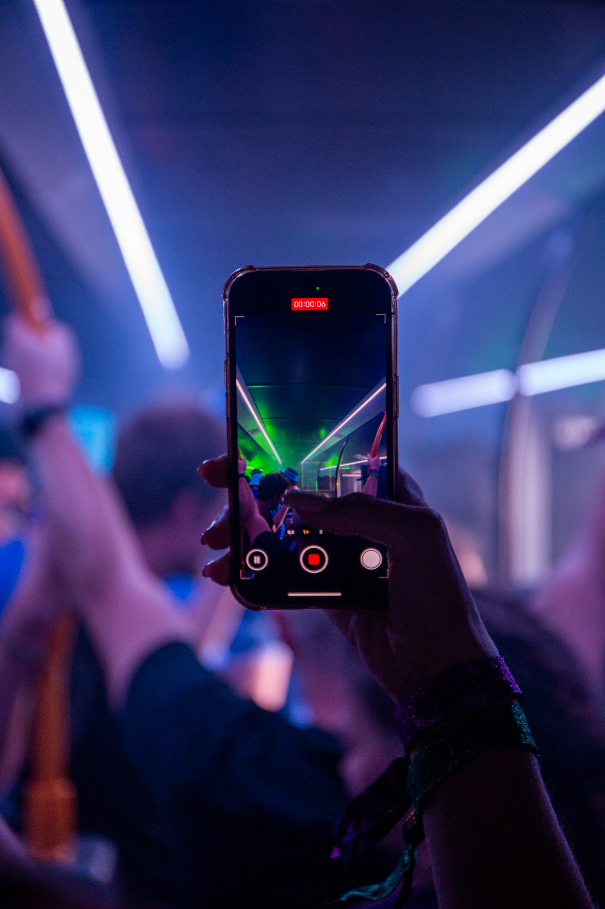
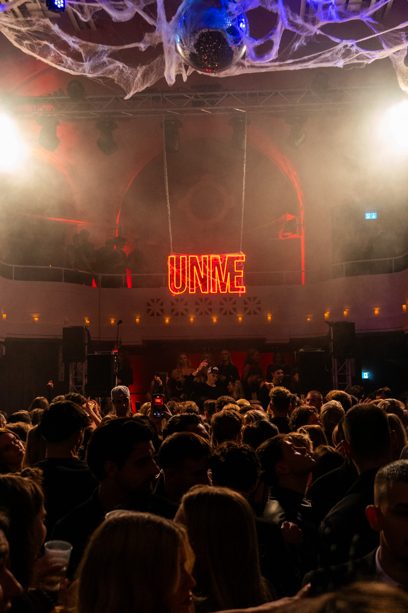

ABOUT ME
Mein bisher größtes Event war der Technobus beim Glücksgefühle Festival 2025. Dort sammelte ich nicht nur meine erste Festivalerfahrung, sondern lernte auch tolle Leute kennen und erfuhr, wie stressig – aber gleichzeitig wunderschön – das Festival-Leben ist.
WHAT I DO
STRATEGY | BRANDING | ART DIRECTIONMEET THE TEAM

David Laier – Foto- & Videograf
Kreativer Kopf hinter LAIERDAVID. Fokus auf emotionale, cineastische Bildwelten.